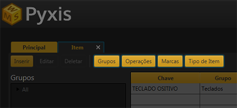
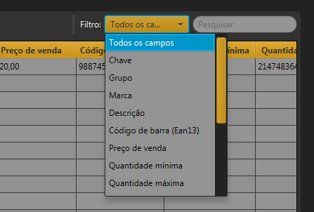

Itens
Todos os itens com o qual o estoque trabalhará deve ser cadastrado na tela "Item", independente de ele
estar presente no estoque ou não.
É necessário inserir a Marca, grupo e Tipo de item antes da inserção do itens.

É possivel procurar itens na tabela "Item", escrevendo na barra de pesquisa e filtrando o campo.
